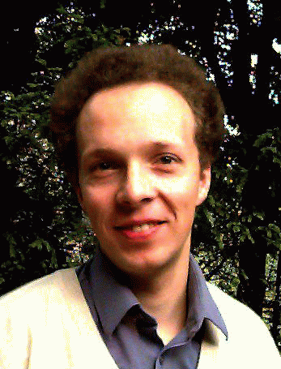

|  |
Fachbereich Mathematik Bereich Algebra und Zahlentheorie Zentrum für Mathematische Physik SFB 1624 Excellence Cluster "Quantum universe" Bundesstraße 55 20146 Hamburg Office: Geomatikum 313 |
Tel.: +49 40 42838-5170 Secr.Tel.: +49 40 42838-5171 (Ms. K. Zimmer, Mo-Fr 9-15) Email: christoph.schweigert (at) wir wollen keinen Spam at uni-hamburg.de |
Veranstaltungen im Sommersemester 2025 / Teaching in the summer term 2025:
Sprechstunde : Nach Vereinbarung per e-Mail.
Office Hours : Upon appointment by e-mail.
Lecture Notes
Hints for
oral exams.
Curriculum vitae, list of publications , publications from arXiv or google scholar.